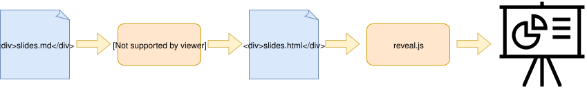

reveal.js 是一个 html 幻灯片框架，如果要写 html 幻灯片，这就是最好的选择了。Pandoc 是 Markup 格式之间转换的瑞士军刀。
为什么不用 PowerPoint 或者 Keynote？Pandoc + reveal.js Vs. PowerPoint/Keynote:
-
Pros:
- 专注于内容，而不是调样式；
- 兼容性好，不需要专用软件来播放，只需要浏览器，几乎任何一台电脑都能胜任；
- 开源。
-
Cons:
- 没有所见即所得的编辑器；
- 动画效果弱；
- 没有绘图功能（可以用其他软件画图导出后贴到幻灯片里）。
以下是一个用Pandoc + reveal.js 生成的幻灯片。
reveal.js 要用 html 来编写，虽然有着巨大的灵活性，但是相对来说比较繁琐。那么我们自然能想到用 markdown 来写 html，reveal.js 本身是支持 markdown 的，但是 Pandoc 更为专业，提供了对 reveal.js 的支持，且提供了很多方便的特性，如分栏、演讲者笔记、暂停、分批出现等。
生成过程如下图所示。

快速开始
安装 pandoc（以 MacOS 为例）：
编写 slides.md：
1
2
3
4
5
6
7
8
9
10
11
12
13
14
15
16
|
---
title: 'Html 幻灯片'
author: janzhen
date: 2019-05-14
---
# Pandoc
* Pandoc 是一个 Markup 格式转换工具
* pandoc.org
# Reveal.js
* reveal.js 是一个 html 幻灯片框架
# 结合
md -> pandoc -> html(reveal.js)
# 谢谢！
|
没错，这就是上面的幻灯片的源码。生成 html 命令如下：
1
|
pandoc -t revealjs -s -V revealjs-url=https://revealjs.com -o slides.html slides.md
|
打开生成的 slides.html，就可以做演示了。
为了简化生成命令，可以用下面这个 Makefile。此外，生成幻灯片时会自动下载 reveal.js 和 katex，设置相应的参数。reveal.js 下载到本地，演示时可以不依赖网络。
1
2
3
4
5
6
7
8
9
10
11
12
13
14
15
16
17
18
19
|
OPTS = -V history=true -V theme=black -V transition=slide -V transitionSpeed=fast
build: assets/reveal.js assets/katex
pandoc -t revealjs -s -o slides.html -V revealjs-url=./assets/reveal.js --katex=./assets/katex/ $(OPTS) slides.md
open slides.html
assets/reveal.js:
mkdir -p assets
curl -L https://github.com/hakimel/reveal.js/archive/master.tar.gz | tar -C assets -zxf -
mv assets/reveal.js-master assets/reveal.js
assets/katex:
mkdir -p assets
curl -L https://github.com/KaTeX/KaTeX/releases/download/v0.10.2/katex.tar.gz | tar -C assets -zxf -
clean:
rm -rf assets slides.html
.PHONY: build clean
|
Pandoc 的 Markdown 扩展
Markdown 格式较为简单，能做的事情仅限于此吗？不是的，Pandoc 对 Markdown 做了扩展，以下介绍两个特性。
自定义 css
1
2
3
4
|
/* custom.css */
.highlight {
color: red;
}
|
在 slides.md 里应用这个样式：
1
2
3
4
|
# 应用样式
* foo
* [高亮]{.highlight}
|
用 --css 参数，引入自定义 css（如果要用上面提供的 Makefile 生成，只需要把 --css 参数加到 OPTS 里即可）：
1
|
pandoc --css custom.css -t revealjs -s -V revealjs-url=https://revealjs.com -o slides.html slides.md
|
生成结果：
1
2
3
4
5
6
7
|
<section id="应用样式" class="slide level1">
<h1>应用样式</h1>
<ul>
<li>foo</li>
<li><span class="highlight">高亮</span></li>
</ul>
</section>
|
可以看出，[]{.class}会创建一个<span>，并应用class。
分栏
幻灯片的空间紧张，分栏是充分利用的空间的一个办法。Reveal.js 本身没有提供分栏的支持，但是 Pandoc 有分栏的扩展。
1
2
3
4
5
6
7
8
9
10
|
# 分栏
:::: {.columns}
::: {.column width="40%"}
分栏 1
:::
::: {.column width="60%"}
分栏 2
:::
::::
|
渲染结果：
1
2
3
4
5
6
7
8
9
10
11
|
<section id="分栏" class="slide level1">
<h1>分栏</h1>
<div class="columns">
<div class="column" style="width:40%;">
<p>分栏 1</p>
</div>
<div class="column" style="width:60%;">
<p>分栏 2</p>
</div>
</div>
</section>
|
补充说明一点，3个以上:会创建一个<div>，超过3个只是为了方便看配对，可以根据自己的喜好来。
What’s Next
准备用这个组合写幻灯片了吗？接下来可以一边写，一边看看 Pandoc 和 reveal.js 的文档。不妨重点看看 Pandoc 对 markdown 的扩展，以及与 reveal.js 相关的内容。
Pandoc: https://pandoc.org/MANUAL.html
reveal.js: https://github.com/hakimel/reveal.js/